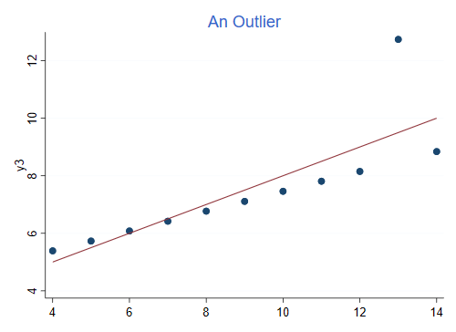
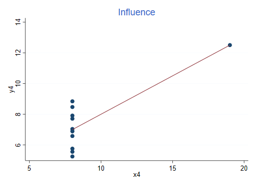

Anscombe (1973) has a nice example where he uses a constructed dataset to emphasize the importance of using graphs in statistical analysis. The data are available in the Stata bookstore as part of the support for Kohler and Kreuter’s Data Analysis Using Stata, and can be read using the following command
. use http://www.stata-press.com/data/kk/anscombe, clear (synthetical data (Anscombe 1973))
There are 8 variables, representing four pairings of an outcome and a predictor. All sets have 11 observations, the same mean of x (9) and y (7.5), the same fitted regression line (y = 3 + 0.5 x), the same regression and residual sum of squares and therefore the same multiple R-squared of 0.67. But they represent very different situations, as you will see by clicking on each dataset:
Here’s the first dataset:
This is an example of pure error, the observations appear randomly distributed around the regression line, just as the model assumes.
For the record, here is the regression output.
. regress y1 x1
Source │ SS df MS Number of obs = 11
─────────────┼────────────────────────────────── F(1, 9) = 17.99
Model │ 27.5100011 1 27.5100011 Prob > F = 0.0022
Residual │ 13.7626904 9 1.52918783 R-squared = 0.6665
─────────────┼────────────────────────────────── Adj R-squared = 0.6295
Total │ 41.2726916 10 4.12726916 Root MSE = 1.2366
─────────────┬────────────────────────────────────────────────────────────────
y1 │ Coefficient Std. err. t P>|t| [95% conf. interval]
─────────────┼────────────────────────────────────────────────────────────────
x1 │ .5000909 .1179055 4.24 0.002 .2333701 .7668117
_cons │ 3.000091 1.124747 2.67 0.026 .4557369 5.544445
─────────────┴────────────────────────────────────────────────────────────────
The graph was produced using these commands:
. twoway scatter y1 x1 || lfit y1 x1, title("Pure Error") ytitle(y1) legend(off)
. graph export anscombe1.png, width(500) replace
file anscombe1.png saved as PNG format
The data in the second dataset look very different, even though the R-squared is the same:
This is an example of lack of fit, the model assumes a linear relationship but the dependence is in fact curvilinear. If you add a quadratic term you can increase R-squared to 1.
For the record this is the regression for the second pair:
. reg y2 x2
Source │ SS df MS Number of obs = 11
─────────────┼────────────────────────────────── F(1, 9) = 17.97
Model │ 27.5000024 1 27.5000024 Prob > F = 0.0022
Residual │ 13.776294 9 1.53069933 R-squared = 0.6662
─────────────┼────────────────────────────────── Adj R-squared = 0.6292
Total │ 41.2762964 10 4.12762964 Root MSE = 1.2372
─────────────┬────────────────────────────────────────────────────────────────
y2 │ Coefficient Std. err. t P>|t| [95% conf. interval]
─────────────┼────────────────────────────────────────────────────────────────
x2 │ .5 .1179638 4.24 0.002 .2331475 .7668526
_cons │ 3.000909 1.125303 2.67 0.026 .4552978 5.54652
─────────────┴────────────────────────────────────────────────────────────────
The graph was produced using these commands:
. twoway scatter y2 x2 || lfit y2 x2, title("Lack of Fit") ytitle(y2) legend(off)
. graph export anscombe2.png, width(500) replace
file anscombe2.png saved as PNG format
Here is the graph for the third pair. R-squared is still 0.666, but the data look very different.

This is an example of an outlier, the model specifies a linear relationship and all points but one follow it exactly. You could increase R-squared to 1 by omitting the outlier.
Here’s the regression output
. reg y3 x3
Source │ SS df MS Number of obs = 11
─────────────┼────────────────────────────────── F(1, 9) = 17.97
Model │ 27.4700075 1 27.4700075 Prob > F = 0.0022
Residual │ 13.7561905 9 1.52846561 R-squared = 0.6663
─────────────┼────────────────────────────────── Adj R-squared = 0.6292
Total │ 41.2261979 10 4.12261979 Root MSE = 1.2363
─────────────┬────────────────────────────────────────────────────────────────
y3 │ Coefficient Std. err. t P>|t| [95% conf. interval]
─────────────┼────────────────────────────────────────────────────────────────
x3 │ .4997273 .1178777 4.24 0.002 .2330695 .7663851
_cons │ 3.002455 1.124481 2.67 0.026 .4587014 5.546208
─────────────┴────────────────────────────────────────────────────────────────
The graph was produced using these commands:
. twoway scatter y3 x3 || lfit y2 x2, title("An Outlier") ytitle(y3) legend(off)
. graph export anscombe3.png, width(500) replace
file anscombe3.png saved as PNG format
Finally, this is the graph for the fourth dataset. Once again, R-squared is 0.666, the same as in the previous three cases:

This is an example of influence, the slope is completely determined by the observation on the right. Without that observation we would not be able to estimate the regression, as all x’s would be the same.
Here’s the regression:
. reg y4 x4
Source │ SS df MS Number of obs = 11
─────────────┼────────────────────────────────── F(1, 9) = 18.00
Model │ 27.4900007 1 27.4900007 Prob > F = 0.0022
Residual │ 13.7424908 9 1.52694342 R-squared = 0.6667
─────────────┼────────────────────────────────── Adj R-squared = 0.6297
Total │ 41.2324915 10 4.12324915 Root MSE = 1.2357
─────────────┬────────────────────────────────────────────────────────────────
y4 │ Coefficient Std. err. t P>|t| [95% conf. interval]
─────────────┼────────────────────────────────────────────────────────────────
x4 │ .4999091 .1178189 4.24 0.002 .2333841 .7664341
_cons │ 3.001727 1.123921 2.67 0.026 .4592411 5.544213
─────────────┴────────────────────────────────────────────────────────────────
The graph was produced using these commands:
. twoway scatter y4 x4 || lfit y4 x4, title("Influence") ytitle(y4) legend(off)
. graph export anscombe4.png, width(500) replace
file anscombe4.png saved as PNG format
Anscombe, F. J. (1973). Graphs in Statistical Analysis. The American Statistician, 27(1):17-21. If you have access to JSTOR you can get the article at the following link: https://www.jstor.org/stable/2682899.